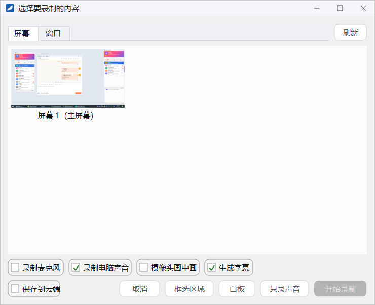
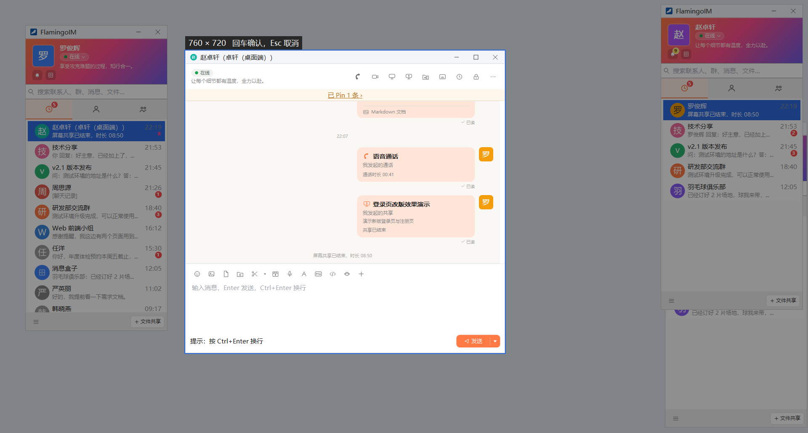
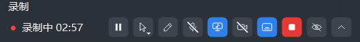
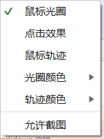
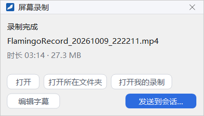
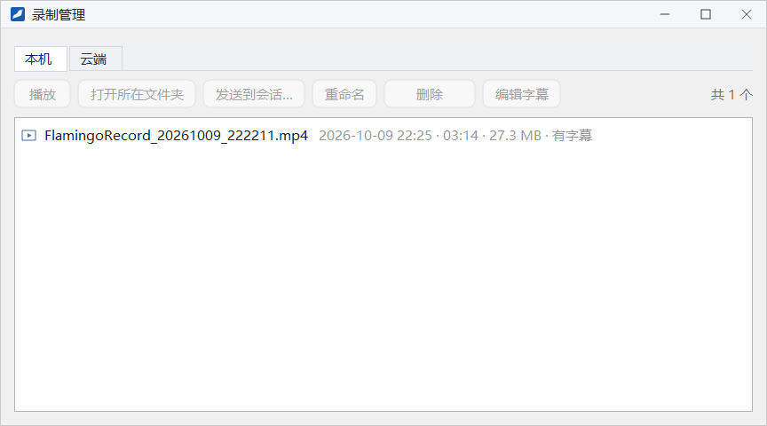
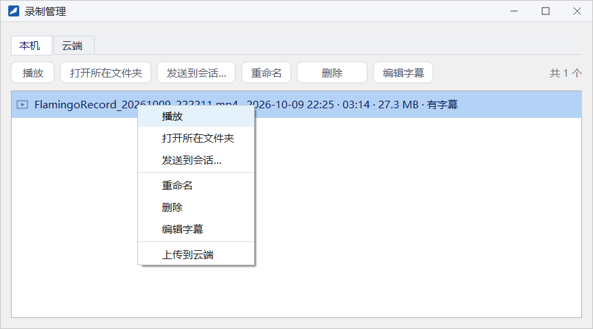

屏幕录制
客户端自带录屏功能，可以录制整块屏幕、某个窗口、框选的区域或一块白板，也可以只录声音。录好的视频保存在本机，可以直接发到会话里，也可以保存到云端。
- 适用：全体员工
- 系统要求：Windows 10 2004 或更高版本
- 保存到云端：需要企业开启「云端录制」开关
- 生成字幕：需要企业开启「语音字幕」开关
开始录制
以下任一方式都可以开始录制：
- 主面板系统菜单或托盘菜单里的 发起录制（录制中这一项变为「停止录制」）。
- 聊天窗输入工具栏上的 屏幕录制 按钮，在弹出的菜单里选 开始录制…。从聊天窗发起的录制，结束后可以一键发给这个会话。
- 按快捷键 Ctrl+Alt+R，录制中再按一次即停止。这个快捷键可以在系统设置里关闭，见本章「录屏设置」。
选择录制内容

- 在 屏幕 页签里选一块显示器，或在 窗口 页签里选一个程序窗口。列表不是最新时点 刷新。
- 按需勾选下方的选项（见下表）。
- 点 开始录制。也可以改点 框选区域、白板 或 只录声音，说明见下表。
| 选项或按钮 | 作用 |
|---|---|
| 录制麦克风 | 录下你通过麦克风讲的话 |
| 录制电脑声音 | 录下电脑上播放的声音 |
| 摄像头画中画 | 把摄像头画面以小窗口的形式叠加在录像里 |
| 生成字幕 | 录制时把讲话识别成字幕，录完后可以编辑和导出，见「字幕模式与字幕编辑」；默认沿用上次的选择 |
| 保存到云端 | 录完后把录像上传到服务器，企业没有开通云端录制时不能勾选 |
| 框选区域 | 在屏幕上拖出一个矩形，只录这一块区域 |
| 白板 | 打开一块白板并录制它，适合边画边讲 |
| 只录声音 | 不录画面，只录麦克风或电脑声音，保存为音频文件；至少要勾选「录制麦克风」或「录制电脑声音」中的一项 |
框选区域
点 框选区域 后，屏幕变暗，按住鼠标左键拖出要录制的矩形。选区左上角实时显示尺寸和提示「回车确认，Esc 取消」：按 Enter 或双击确认，按 Esc 或单击右键取消。

录制条
录制开始后，屏幕上出现一条录制条，左侧显示「录制中」和已录的时长（暂停时为「已暂停」，只录声音时为「录音中」）。录制条默认不会被录进视频。

1 2 3 4 5 6 7 8 9 10- 暂停 / 继续：暂停期间的内容不会录进视频
- 鼠标效果：设置鼠标光圈、点击效果和轨迹，见下图
- 画笔：在屏幕上画图、写字，笔迹会录进视频
- 麦克风：鼠标停在上面显示「麦克风：开」或「麦克风：关」，点击切换
- 电脑声音：开关电脑声音的录制
- 摄像头：开关摄像头画中画
- 字幕：开关字幕；关闭期间的讲话不会生成字幕
- 停止：结束录制并保存
- 隐藏：完全隐藏录制条，鼠标移到屏幕边缘时重新出现
- 收起 / 固定：把录制条收成小把手，鼠标移上去时临时展开

点录制条上的鼠标效果按钮，可以勾选：
- 鼠标光圈：在鼠标周围显示一圈光圈，光圈颜色 可以另选。
- 点击效果：单击时显示点击效果。
- 鼠标轨迹：显示鼠标移动的轨迹，轨迹颜色 可以另选。
- 允许截图：录制条默认不会出现在截图和录像里，勾选后可以被截取。
录制完成
停止录制后，屏幕右下角弹出「录制完成」提示，显示文件名、时长和文件大小：

- 打开：用系统默认的播放器播放这段录像。
- 打开所在文件夹：在资源管理器里定位到录像文件。
- 打开我的录制：打开「录制管理」窗口。
- 编辑字幕：这次录制生成了字幕时才有，打开字幕编辑器。
- 发送到会话…：选择会话，把录像作为文件发出去。从聊天窗发起的录制，这个按钮直接是 发送，提示标题为「录制完成，可发送给 某某」。
录像默认保存在「视频」文件夹下的 FlamingoRecords 文件夹里，文件名形如 FlamingoRecord_20261009_222211.mp4。磁盘空间不足、录制的窗口被关闭等情况下录制会自动停止，提示标题会说明原因，已经录到的部分照常保存。
录制管理
从主面板系统菜单的 录制管理、聊天窗「屏幕录制」菜单里的 录制管理，或录制完成提示上的 打开我的录制，都可以打开「录制管理」窗口。窗口分 本机 和 云端 两个页签。
本机录像
列表里每一行显示文件名、录制时间、时长、大小，以及是否有字幕（「有字幕」，导出过字幕时写明导出了哪几种）。选中一行后，可以用上方的按钮或右键菜单操作：


| 操作 | 说明 |
|---|---|
| 播放 | 用系统默认的播放器播放 |
| 打开所在文件夹 | 在资源管理器里定位到文件 |
| 发送到会话… | 选择会话，把录像发出去 |
| 重命名 | 直接在列表里修改文件名 |
| 删除 | 确认后把文件移到回收站；文件已经不存在时，这一项变为「从列表移除」 |
| 编辑字幕 | 打开字幕编辑器，见「字幕编辑器」 |
| 上传到云端 | 仅在右键菜单里，把这段录像保存到云端 |
云端录像
云端 页签列出保存在服务器上的录像，包括录屏时勾选了「保存到云端」的录像和屏幕共享中的云端录制。可以 播放、下载…、发送到会话…、重命名 和 删除。列表会显示「上传中」「合成中」等进度；云端录像有保存期限，列表里显示「N 天后到期」。删除云端录像后不能恢复，已经发到会话里的录像卡片也无法再观看。企业没有开通云端录制时，这一页显示「管理员没有开通云端录制」。
录屏设置
在主面板系统菜单打开 系统设置，切到 音视频 页，可以修改以下几项（详见「系统设置」）：
- 录屏画质：标准 或 高清。高清的分辨率最高 2560，码率约为标准的 2 倍，画面更清晰，文件也更大。
- 录屏保存位置：点 更改 选择其他文件夹，默认是「视频」文件夹下的
FlamingoRecords。 - 录屏快捷键：开启后按 Ctrl+Alt+R 开始录屏，录制中再按一次停止。